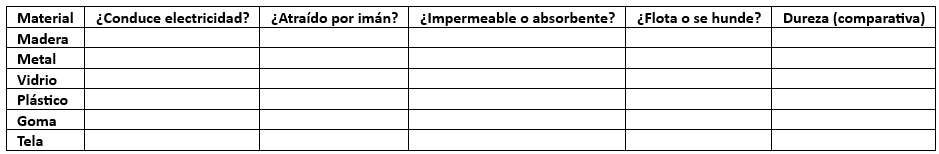

Propiedades de los materiales
Los materiales son sustancias que se utilizan para fabricar objetos y dispositivos tecnológicos. Cada material tiene propiedades específicas que determinan su uso en la tecnología.
Clasificación y Propiedades de los Materiales
Los materiales pueden clasificarse según diferentes características:
- Propiedades físicas:
- Dureza: Capacidad de resistir rayaduras o deformaciones.
- Elasticidad: Capacidad de un material para recuperar su forma original después de ser deformado.
- Transparencia: Permite o no el paso de la luz (transparente, translúcido, opaco).
- Densidad: Relación entre la masa y el volumen de un material (materiales que flotan o se hunden).
- Propiedades mecánicas:
- Resistencia: Capacidad de soportar fuerzas sin romperse.
- Fragilidad: Facilidad con la que un material se quiebra o rompe.
- Maleabilidad: Capacidad de un material de extenderse en láminas sin romperse.
- Propiedades eléctricas y térmicas:
- Conductividad eléctrica: Si permite o no el paso de la electricidad (conductor o aislante).
- Conductividad térmica: Si transmite el calor fácilmente o no.
Actividad: Observación de propiedades de los materiales
Observar cada material y realizar pruebas para determinar sus propiedades. Dibujar la tabla y registrar los resultados.
Para reflexionar y conversar:
- ¿Qué materiales fueron más resistentes y cuáles más frágiles?
- ¿Cuáles serían útiles para fabricar un teléfono celular? ¿Por qué?
Responder en la carpeta:
- ¿Por qué crees que es importante elegir adecuadamente los materiales al diseñar un objeto tecnológico? Da un ejemplo.